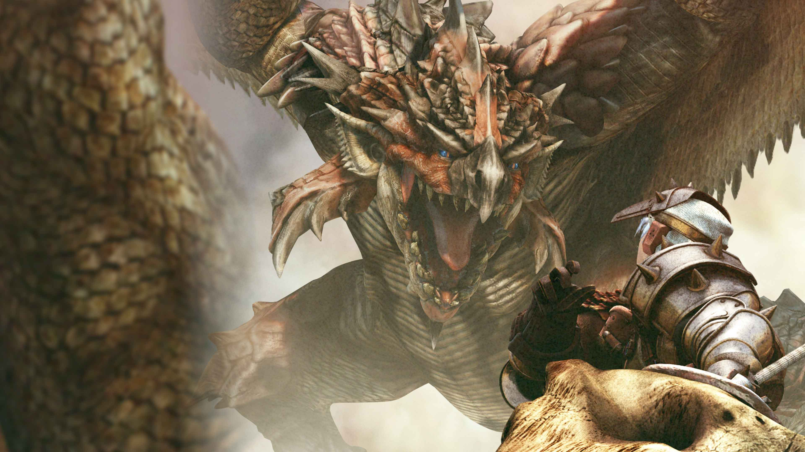

モンスターハンター
発売日
2004年3月11日
対応機種
PlayStation 2
モンスターハンターシリーズは、 2004年に発売された「モンスターハンター」を 起点とするハンティングアクションゲームシリーズです。
| 発売元 | CAPCOM |
|---|---|
| ジャンル | ハンティングアクション |
| 主な対応機種 | PlayStationシリーズ、 Nintendo Switch、 Xbox、 Steamなど |
※本ページは非公式ファンWikiです。掲載内容はCAPCOM公式サイトなど公開されている情報を基に作成しています。 未発表作品やリーク情報、推測による内容は掲載していません。